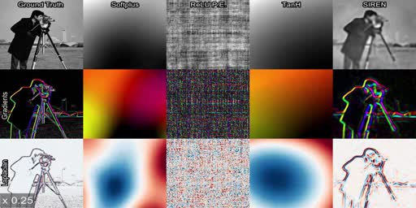
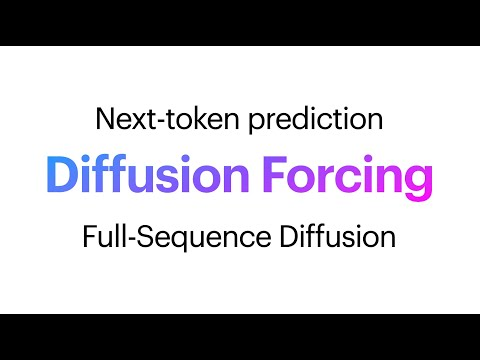

2019 · NeurIPS
Scene Representation Networks
Continuous, 3D-aware scene functions from 2D images.
A research arc in six ideas
Each step expands what a learned representation can hold—and what an agent can do with it.
2019 · NeurIPS
Continuous, 3D-aware scene functions from 2D images.

2020 · NeurIPS
Periodic activations reveal fine signal detail and derivatives.

2021 · ICRA
Equivariant object representations move into manipulation.
2023 · CVPR
Feed-forward Gaussian splats make scalable 3D reconstruction fast.

2024 · NeurIPS
Next-token flexibility meets full-sequence diffusion.

2026 · arXiv
Hierarchical latents preserve long-range video consistency.
Scene functions → neural fields → embodied descriptors → splats → sequence models
2019—2026